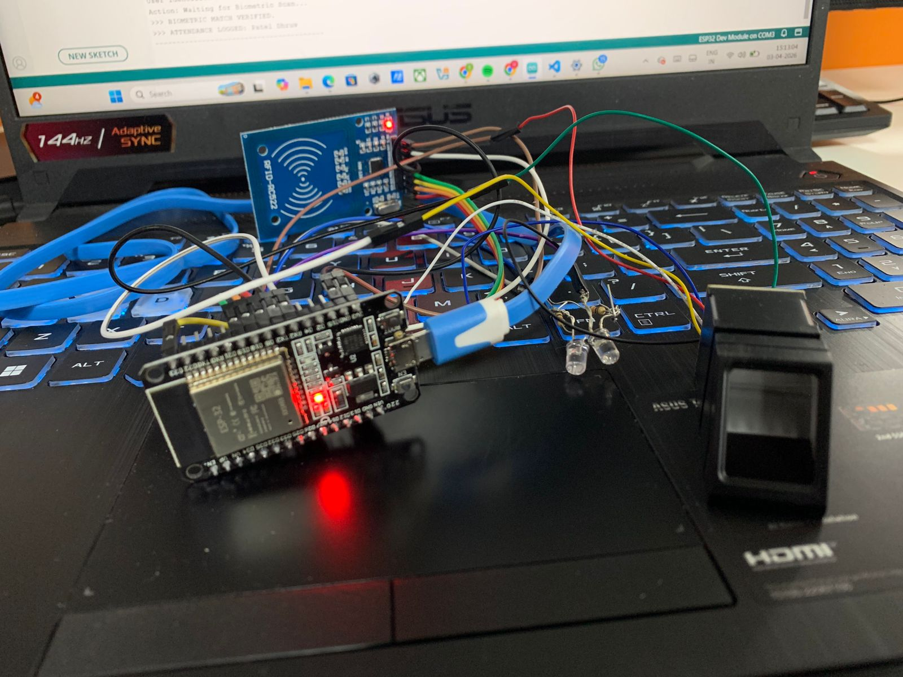
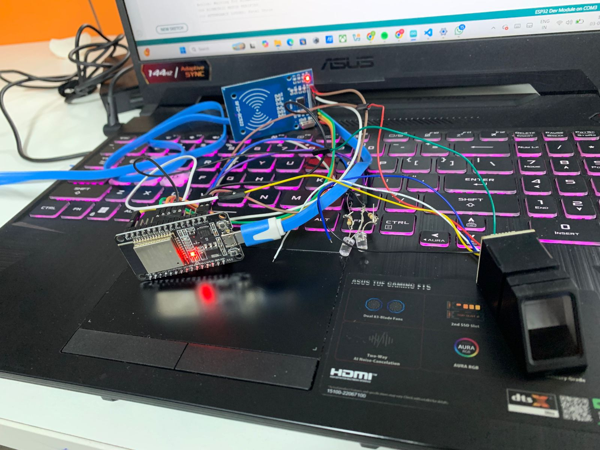
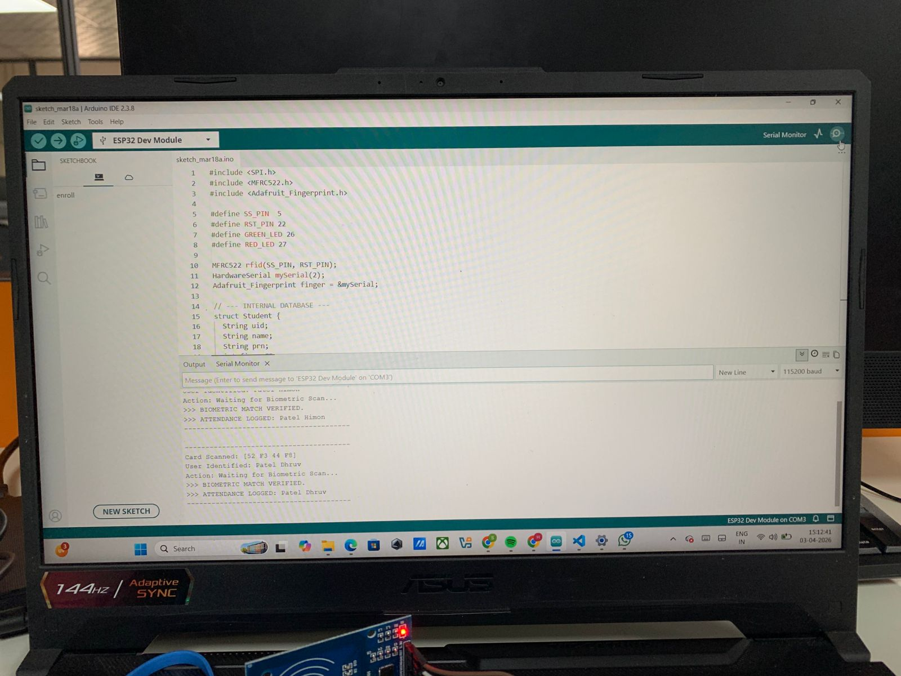
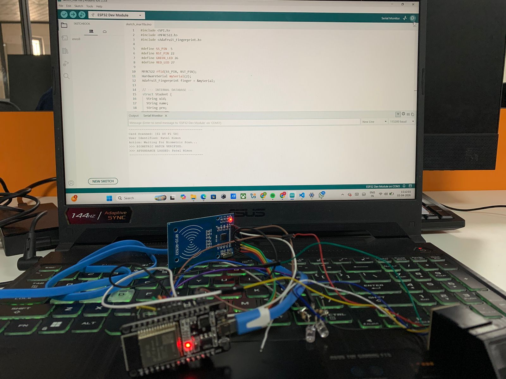

What was demonstrated
RFID read, local identity matching, fingerprint verification, indicator response and serial output.

A small ESP32-based prototype exploring RFID identification, fingerprint verification and the practical boundary between a working hardware demo and a complete connected product.
WORKING HARDWARE PROTOTYPE · EXTERNAL DATABASE NOT INTEGRATEDThe setup combines an ESP32 board, an MFRC522 RFID reader and a fingerprint sensor. The photographs below are from the actual prototype and show the wiring, reader, biometric module and serial-monitor output used during testing.



Rather than replacing the build with polished mockups, these short clips preserve the real test setup: card scans, fingerprint interaction, LEDs and serial-monitor feedback.
I handled the practical implementation and used AI as step-by-step assistance while working through hardware connections and microcontroller code. I do not present that as embedded-systems expertise; the value for me was building enough of the system to understand how the components interact.
The serial-monitor test demonstrates local card identification and biometric verification logic, but I did not complete an external database integration. This is therefore a working embedded/IoT prototype — not a production attendance platform or finished student-ID system.
RFID read, local identity matching, fingerprint verification, indicator response and serial output.
External database persistence, production authentication, deployment, administration and reliability testing.
The prototype gave me practical exposure to RFID interfacing, ESP32 setup, a biometric sensor, serial debugging and basic hardware/software integration. More importantly, it made the missing layers obvious: data architecture, security, persistence and operational use.